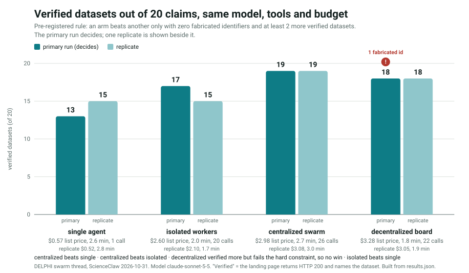

DELPHI reads the great thinkers who tried to put mathematics into biology, turns each of their claims into a small public record, checks what real data says, and keeps the survivors. This page is the shared map of that effort, built for the ScienceClaw hackathon at MIT. Dotted words are clickable.
Time left until the stated end of hacking (Sunday Nov 1, 1:00 PM; the event site gives no time zone, this assumes Boston time)
…
Threads: who is working on what
Each thread is its own Claude session with its own sub-dashboard. This panel reads the status file each one writes. Stale or missing updates show up here, which is the point.
The story in six beats
Read this section and you can explain the whole project at a dinner table. Open any drop-down to go deeper.
Biology has no Newton. Physics has a short list of laws. Biology has enormous amounts of data and few statements that are both general and exact. A fundamental theorem of biology would be a statement that holds across organisms, scales and systems, written precisely enough to be tested.
Why is that hard?
Living things are historical accidents, so a rule that holds in one lineage can fail in another. Many "laws" are true only under assumptions the original author never wrote down. Fisher's fundamental theorem is the standing example: it is a theorem under a narrow reading and false under a broad one, and it was argued over for decades. The repo records both readings.
The old masters already tried. Darwin (1859), D'Arcy Thompson (1917), Fisher, Turing (1952), Kimura, Hamilton, Maynard Smith, and Wolfram (2002) each made claims that could in principle be checked. We extracted 880 of them, each with a verbatim quote and page citation, so nothing is paraphrased from memory.
Every claim becomes a nanopublication. A nanopublication is a tiny, signed, citable record of one assertion, its provenance, and its publication info. That makes a claim queryable by machines and challengeable by anyone.
Then we ask: can data settle it? Two AI assessors from different companies score each claim for dataset resolvability. Claims that can be tested get a pre-registered test against public data. So far four have been run: two refuted, one supported, one mixed. The honest headline is that 876 claims have had no data test yet.
Survivors are formalized. A claim that holds is written as a theorem in Lean 4, a proof checker. A proof shows the conclusion follows from the assumptions. It does not show living things obey the assumptions, so evidence and proof are kept separate on purpose.
Finally, use the laws. Theorems that survive become the rules of a simulator that explores new evolutionary pathways and, as a stretch goal, a text-to-organism tool: describe an organism or function, get a multi-scale blueprint and a genetic sketch.
Where the project is today (from the repo, not from hope):
The plan: seven steps, forward and backward
The team's plan runs from reading to simulating. Because a model is only as honest as its test, we also run it backward: decide the held-out data first, then work toward the claims it can judge.
Step 3 has a hard problem: one claim, many meanings
Your proposal is to enumerate every plausible interpretation of a claim and test the most likely first. The repo already contains the pattern. For Fisher's fundamental theorem the key-claims file records an interpretation that is a theorem and one that is false:
Reading
Status
Why
Partial change: effects of alleles and environment held fixed (Price 1972, Ewens 1989)
proved
Follows from the algebra of average effects.
Total change in mean fitness
false in general
Fails under dominance, epistasis, frequency dependence, or a changing environment.
Proposed schema for any claim: interpretations: [{id, reading, prior, operationalization, dataset, status}], ordered by prior, with the posterior updated by each test. This is a proposal, not yet in the ontology.
The claim map
All extracted claims. Every number below is computed from the claim graph the collaborators' server publishes. Hover a dot to read the claim, click to pin it.
Who said it
What has been done to them
"Untested" means no data test has been run. "Proved" marks claims that are mathematical theorems under stated assumptions, per the key-claims file. That is a statement about logic, not about organisms, and only the ones the Lean thread lists have been machine-checked.
Truth score vs. testability
Each dot is a claim. Vertical: the average probability an AI assessor assigned to it being true. Horizontal: how testable the assessors thought it is with existing data. The left column holds claims with no testability score, which includes all 321 Wolfram claims. Truth scores are model opinions, not evidence.
The ideas on a timeline
Year of each source work, sized by number of extracted claims. Hover a dot for details; colors match the thinker legend above.
Browse and search claims
Evidence: what real data has said so far
Each test was pre-registered, then run on public data. Compare the verdict with what the AI assessors expected: that gap is the project's first calibration check. With four tests it proves nothing statistically, but it shows the method works.
Why "refuted" is good news
A pipeline that can only confirm is advertising. Two of four Thompson tests came back against him, with the pass and fail thresholds written down before looking. That is what makes the supported claim believable. Claims are tested as the author stated them, and any modern reinterpretation is recorded in the result.
Labs: play with the ideas
Five of the theorists' core ideas, running live in your browser. Move the sliders and watch what changes.
1. Turing's pattern engine
Two chemicals that react and spread can turn a smooth blob into spots, stripes or mazes. This is the Gray-Scott model. Click the canvas to drop a seed.
2. Wolfram's one-line universes
A cellular automaton updates each cell from its two neighbors by a lookup rule. 256 rules exist. Rule 30 looks random, rule 90 draws triangles, rule 110 is computationally universal.
3. Drift vs. selection (Kimura)
A variant starts at 10% of the population. Will it take over? Chance dominates in small populations and selection in large ones. Thin lines are simulated populations.
4. Thompson's shell, in 3D
A shell grows by adding a shape similar to itself along a logarithmic spiral. Three numbers describe it (Raup's model). Drag to rotate.
In this model the shape never changes as it grows. The real-data test on 179 ammonoid series found shape indices changed by 50% or more in 94% of them, so the strict version of Thompson's claim was refuted.
5. Hamilton's rule
Helping a relative pays when relatedness times benefit exceeds cost.
The repo marks the related haplodiploidy hypothesis for the origin of eusociality as refuted, even though the rule itself is proved.
The swarm: emperor, king, queens, workers
The hackathon scores decentralized agency (20%) and collective capability (25%). A swarm that is only a hierarchy of prompts scores poorly on the first. So the design below makes the top layers control structure, not content, and lets queens act on their own.
Roles
Emperor
Decides the swarm's shape: how many kings, how many queens per king, who may talk directly, and each agent's context budget. Never reads science content.
King
Manages content across domains. When a queen stagnates, forces a serendipity prompt (analogy to law, art, music, healthcare…) or a switch to a new field.
Queen
Owns one sub-domain and explores it with real specifics. Spawns workers.
Worker
Does one verifiable unit: extract, assess, test, formalize, lint, publish, write a dashboard panel.
Serendipity roulette
The king's anti-stagnation tool. Spin to get a random outside field and a forced analogy question.
Watch the emperor and king work
exploringslowingstagnantDashed line: peer link granted by emperor
Measured: single agent vs. isolated vs. centralized vs. decentralized

One run per arm so far, 20 claims, so small differences are not evidence. Full caveats, replicates and the pre-registration are on the swarm sub-dashboard.
The same question, answered the other way, on an enzyme
We ran this comparison twice, in two different worlds, and got opposite answers. Our claim swarm found that a group beats one agent. The sister project on enzyme evolution ran five specialists against one planner on a measured protein landscape and found no collective advantage at all: sharing evidence scored 78 of 100 episodes, isolating the same five scored 77, and a single planner also scored 78. The best arm in that benchmark is one planner with its model prior switched off, at 96.
The difference is what each experiment varied. Their specialists are deterministic code that cannot forget or fabricate, so sharing adds nothing — every member computes the same thing. Ours are language models with a context limit, and the single agent lost mainly by running out of room and leaving answers blank. Collaboration paid where the bottleneck was attention, and paid nothing where it was not. A team claiming collective capability should say which of the two it is in.
Their benchmark is the better-controlled of the two: deterministic arms, 100 episodes, and every decision re-checked against the full data. Our own recount of it is on the enzyme page, including the finding that 17 of the 18 episodes their strong baseline wins are a single endpoint pair.
The rubric asks for a simple comparison: multi-agent vs. single-agent, collaborative vs. isolated, or decentralized vs. centralized. Plan: fix one task, for example "take 20 claims and produce a pre-registered test plan with a verified dataset for each". Run it once with one agent and once with the swarm. Score both on verified-dataset rate, fabricated-identifier rate (must be zero), and time. If the swarm does not win, report that honestly; the judges ask for evidence, not for a particular result.
Hackathon intelligence
ScienceClaw: Internet of Agents, MIT Media Lab, Oct 30 to Nov 1, 2026. Everything here is from the organizers' site and resource PDF, read today.
Score yourself against the rubric
Weights are the organizers'. The 0 to 10 sliders are your own guess; the organizers publish no scale.
Prizes
E14 Fund Prize: $50K SAFE, no cap, no discount, on incorporating an E14-backable startup.
Three NVIDIA DGX Sparks
Formlabs Form Studio 1 printer
alphaXiv: $500 of OpenResearch GPU credits
More to be announced.
Not published: how prizes map to criteria, how many winners, and what artifacts to submit beyond final slides.
Judges
Avijit Ghosh (Hugging Face), Desiree Plata (MIT), Yilun Du (Harvard), Riken Shah (xAI), Ian Ferguson (Formlabs), Nikita Fedik (NVIDIA).
Compute and credits available to teams
Resource
What the organizers' PDF says
NVIDIA Brev
$150 credit per member (a team of 3 to 5 pools $450 to $750). GPUs from L4 to H200. One one-time coupon per registered email.
Dell Pro Max GB10 ("DGX Spark")
Five on site, 128 GB GPU memory. Ask in the NVIDIA Discord channel and explain why it fits.
NVIDIA frameworks
ALCHEMI (chemistry and materials), BioNeMo (life science), NeMo (training agents and models), Nemotron.
Claude API
$100 per participant in the Claude Console. Not usable on claude.ai or a Pro/Max plan.
Nebius Scientific AI Platform
One login per team. Closed beta, 65 models used as skills, including AlphaFold3 and Boltz-2, plus OpenMM and AMBER. 10 GB bucket and an MCP endpoint for your agents.
Nebius shared H100s
16 H100s shared by all teams. Jobs queue up to 30 minutes then fail. 1 to 8 GPUs per job, but one GPU per team is requested.
Google AI Studio and Cloud
Tier 1 Gemini key, 32 vCPUs and 500 GB SSD per account, Cloud Run for demos. At most 2 accounts per team or the team loses prize eligibility. Accounts auto-delete Sunday night.
OpenAI
$50 API credit per participant.
Redemption links are deliberately not shown here. The PDF says anyone sharing them outside the event is disqualified, and this page is public.
Schedule
When
What
Fri 6:30 PM
NVIDIA: Agentic Methods for ALCHEMI and BioNeMo
Sat 10:00 AM
Formlabs PreForm API demo
Sat 2:00 to 6:00 PM
Mentor sessions with Reactorfield
Sun 1:00 PM
End of hacking, final slides due
Sun 2:30 PM
Presentations and judging
Sun 4:30 PM
Awards and closing
Teams are 2 to 5 people, all in person. The organizers allow +10 bonus points for capabilities that materially strengthen other teams, for example a tool or dataset another team reuses. Our public MCP server and this dashboard are candidates.
Team and anecdotal evidence
Evidence is graded on this page. anecdote means what a person on the team said. repo means a file or commit you can open. proposal means an idea not yet built.
Joel Dietz Runs agent swarms for claim extraction via Cursor. 32 of the repo's 43 commits are under this name; the other 11 are from Cursor Agent.
Kavita Kulkarni Team lead. Principal scientist at the Chan Zuckerberg Biohub, working on Virtual Cell efforts.
Amit Shenoy Evolutionary biology design; rare disease mechanism prediction with agents at the Broad Institute. Set this project’s direction and holds the publishing and commit decisions.
Ashley Software engineer at Knowledge Pixels, the nanopublication company. Software side.
Chris Allen Institute, 25 years of experience at Microsoft. More theoretical.
What the team has said and done
Evidence
Grade
Source
Two threads map onto the team’s own working domains rather than being chosen arbitrarily: the virtual-cell and multi-scale framing behind text-to-organism, and the agent-driven mechanism prediction behind the claim-test pipeline.
anecdote
Team roles, Oct 31
"We're interested in text-to-organism creation": describe an organism or function, get a topological representation at body, organ system, organ, tissue and cell scales, and a predicted genetic makeup.
anecdote
Team description, Oct 31
A species inventory was discussed internally. The knowledge base is Knowledge Pixels nanopublications.
anecdote
Team description, Oct 31
Six-step plan: extract claims, assess resolvability, resolve, record in Lean, promote to theorems, simulate. Step 7: curate held-out phylogenetic or deep mutational scanning data.
anecdote
Team description, Oct 31
Five agents proposed in team chat: extraction, theorem formulation, dataset collection, publishing, simulation with BioNeMo. A repo issue argues the harness assignments are partly backwards and that an independent assessor stage is missing.
proposal
Issue #17 (team chat, Oct 30, 11:12 PM)
A self-bot posting to Discord was auto-banned after one message. Use an official bot.
Still to collect from people: Kavita’s prior Virtual Cell results and whether any are reusable here, what Chris considers the strongest theoretical claim, Ashley’s view on registry limits, and whether any real genome data for the organism inventory exists. These are questions only the team can answer.
Issues in the collaborators' repo
Text-to-organism: what is realistic
The idea: type "a small freshwater animal that regenerates its limbs" and get a nested blueprint from whole body down to cell types, plus a guess at its genome. Here is what that would take and how to make it testable.
The five scales
Click a level. Each row is a graph node type; the edges (part-of, develops-from, expresses) are what a nanopub knowledge base can hold.
Honest feasibility
Doable in 24 hours: a text-to-blueprint tool that returns a tissue and cell-type hierarchy from an existing ontology, with every node linked to a source.
Doable as a test: predict which gene families a held-out species has from its described traits, scored by leaving out whole clades.
Not credible in 24 hours: designing a viable full genome. Treat any such output as a sketch, labeled as such.
Chimera idea: fusing a fly and a fish is plausible at the level of shared modules, not whole genomes. Mouse Pax6 can trigger eye development in fruit flies (Halder, Callaerts and Gehring, 1995), which is why module-level swaps are a real research direction.
BioNeMo models the team's own issue lists
Task
Models named in issue #14
Structure prediction
OpenFold3, Boltz-2, OpenFold2, AlphaFold2 and Multimer, ESMFold
Protein design
RFdiffusion, RFD4-Proteina, ProteinMPNN
Embeddings
ESM2-650M
Genomics
Evo 2 (40B, 7B)
Small molecules
GenMol, MolMIM, DiffDock
Per issue #14, ESM2 and ESMFold have free hosted endpoints; the rest need a GPU. Not yet smoke-tested by anyone in this session.
Species inventory and LeanBio
Species inventory. The repo's organism agents have resolved every animal Darwin and Thompson mention to a taxon identifier and public datasets, merged into one inventory. The Species section lets you browse it, see which taxa have genomes, and pick a clade to hold out.
LeanBio. A probabilistic Lean would state claims such as "mutant fixation probability equals 1/(2N)" with explicit assumptions and distributions, so a proof records what is assumed about the population. Lean's math library has probability-mass-function support to start from. The team's own rule applies: a Lean file that proves generic arithmetic instead of the stated law is a stub and must not be published.
Species inventory
Every animal that Darwin and Thompson name, resolved to a real taxon, linked to the claims that mention it and to the genome data that exists for it. It is the seed of the text-to-organism evaluation set: you can only score a genome prediction for a species whose genome you hold out.
Where the taxa sit
Click a class to filter the table below.
A genome-ready holdout, by clade
Hold out a whole class, train on the rest, and score text-to-organism predictions against genomes the model never saw. These classes have species with a NCBI-designated reference genome:
If we invent a law and then pick the data that agrees with it, we have learned nothing. So step 7 goes first: freeze data that no agent will see while building.
Freeze the exam. Choose held-out sets before any simulator exists. Record download URL, retrieval time, size and SHA-256, as the repo's claim-test rules already require.
Candidate sources (to be verified before use)
Protein mutation effects: deep mutational scanning collections such as ProteinGym and MaveDB. Species relationships: the Open Tree of Life and TimeTree. Occurrence and taxonomy: GBIF and NCBI Taxonomy. Reference genomes: Ensembl and NCBI Datasets. These are well-known public resources, but this session has not downloaded or checked any of them, and the repo's rules forbid citing a dataset that was not verified.
Split by lineage, not at random. Leave out whole clades, so a model cannot succeed by finding a close cousin in training. This is the biological version of the blind-target idea behind the CASP protein-structure competition.
Write the prediction before the answer. Each theorem must state what it forbids on the held-out set, and the pass and fail thresholds go in a committed file first.
Score against a dumb baseline. A law that cannot beat "predict the mean" or "copy the nearest relative" has not earned the word.
Then relax: test the same law on a second organism's own data, never borrowed from another species, as the project README demands.
Failure modes, anticipated
Other fields faced this problem
Each row is a challenge DELPHI faces and how another field solved it. The king's serendipity prompts draw on the same well.
Recommendations for the next hours
Ranked by how much each moves the judging rubric per hour of effort. Each has the part that makes it fun.
Sources and what is verified
Nothing on this page is presented as more certain than it is.
Fact
Source
Status
Known gaps
The Drive PDF's image-only pages (3, 7, 10, 12, 14) were not readable as text. Anything only shown as a graphic there is missing.
The swarm panel is a simulation of the control logic. No LLM agents have produced its metrics yet.
The claim graph's registry field is empty for the 321 Wolfram claims even though commits say they were published to the test registry; the graph may lag.
Nothing here is a literature survey of mathematical biology beyond the eight thinkers in the repo.
Ask the claims directly
The collaborator's server is live (tested today, version 0.2.0). Streamable HTTP, no auth, 120 requests per minute per IP.
claude mcp add --transport http delphisci https://delphisci-mcp.fly.dev/mcp